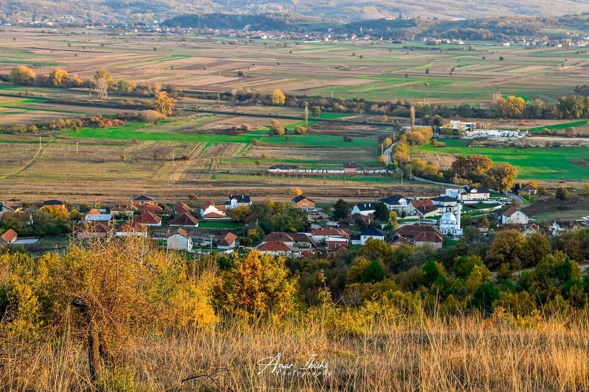
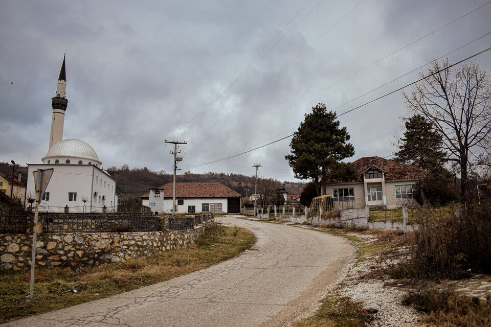
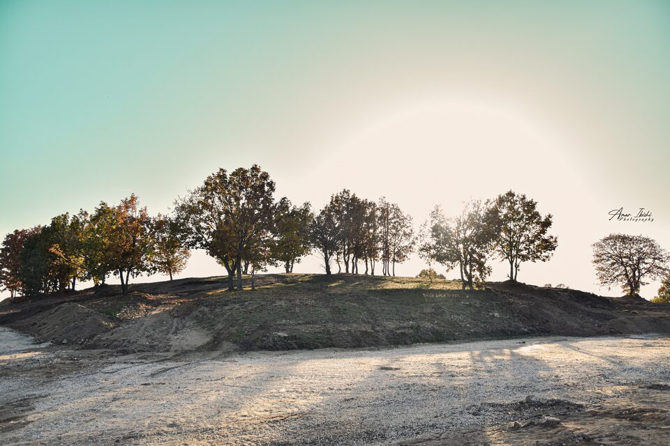
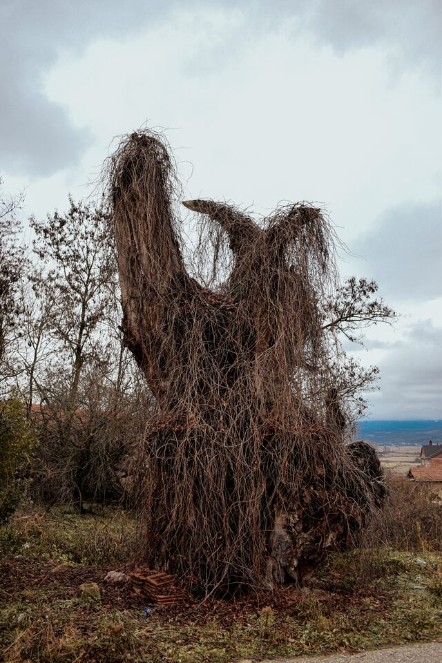
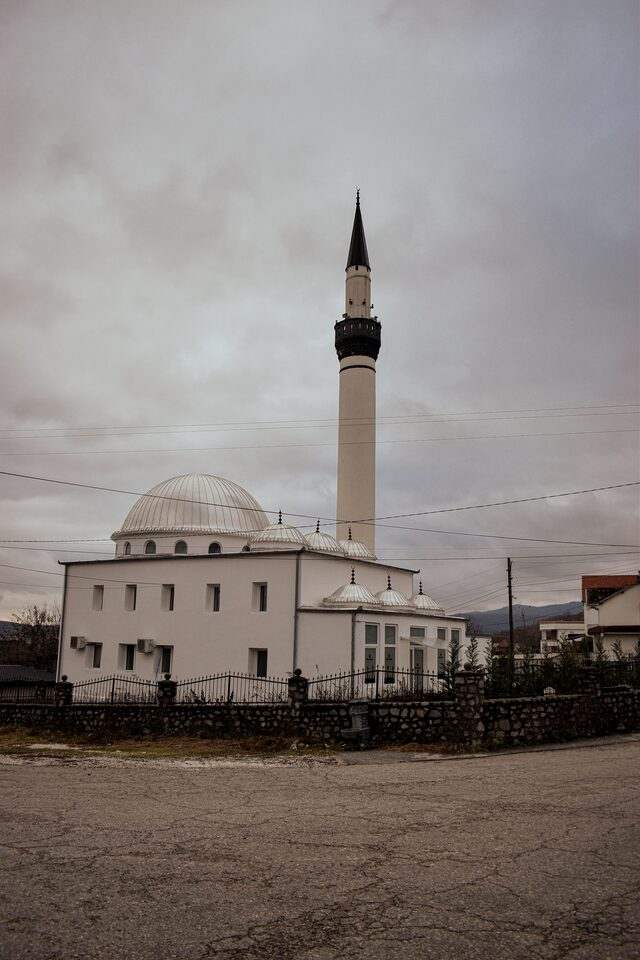
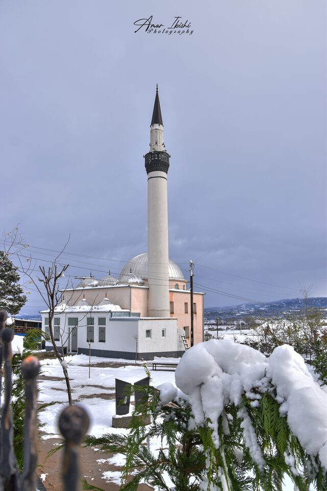
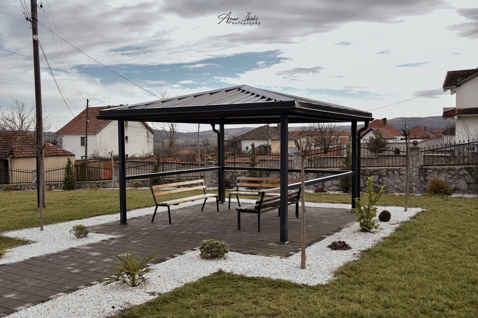
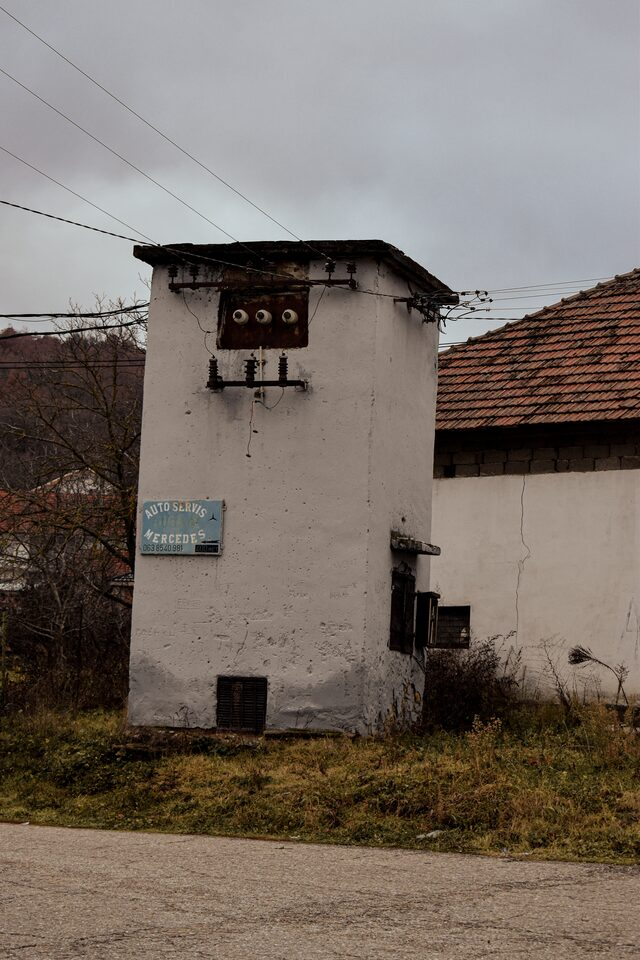
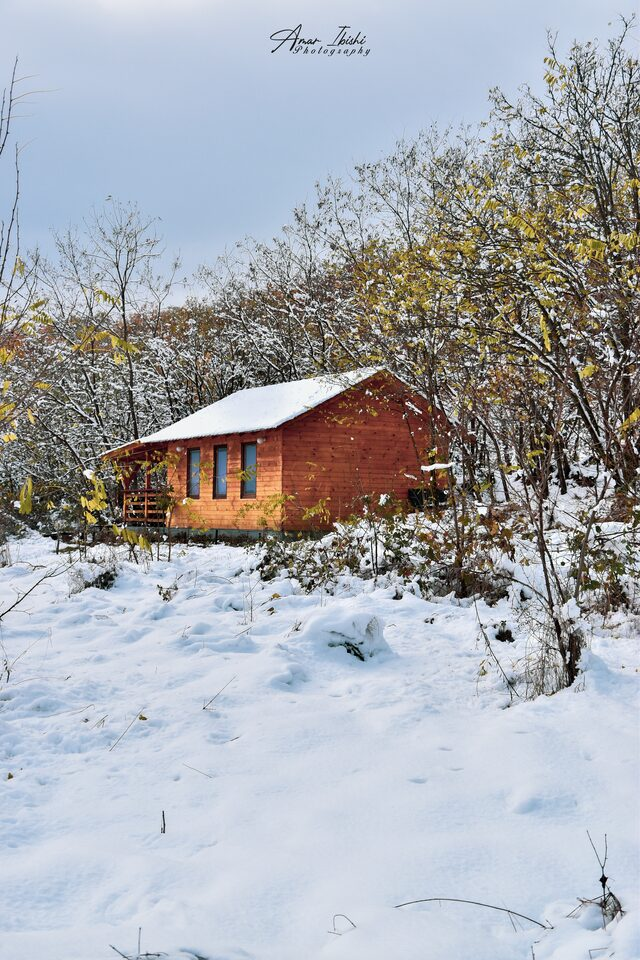
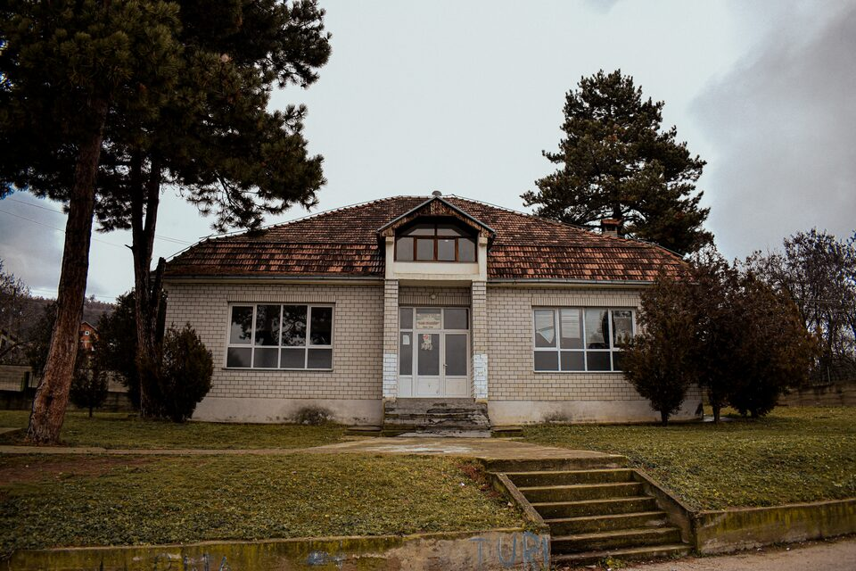

Galeria fotografike Fshati Turi
Një portret i bukurisë së natyrës, kujtimeve dhe traditave që e bëjnë Turinë të veçantë.
"Fshati Turi, një vend ku natyra flet me qetësi, tradita jeton në zemrat e banorëve dhe mikpritja është pasuria më e madhe."
Shfleto fotografitëZbuloni bukurinë natyrore dhe momentet e veçanta të fshatit tonë
10 fotografi

Një këndvështrim i bukur mbi fshatin dhe natyrën përreth.

Një këndvështrim i bukur mbi fshatin dhe natyrën përreth.

Një këndvështrim i bukur mbi fshatin dhe natyrën përreth.

Një pamje e mrekullueshme e lisit të lashtë që është bërë simbol i fshatit.

Një vend i qetësisë dhe traditës që ruan historinë e komunitetit.

Një këndvështrim i bukur i xhamisë, i rrethuar nga natyra.

Një simbol i besimit dhe bashkësisë në zemër të fshatit.

Një këndvështrim i bukur mbi fshatin dhe peizazhin përreth.

Një këndvështrim i bukur mbi fshatin dhe peizazhin përreth.

Shkolla e fshatit, e vendosur në qendër të natyrës së bukur.
Nuk u gjet asnjë fotografi në këtë kategori.